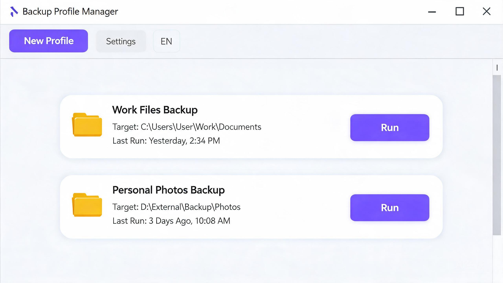
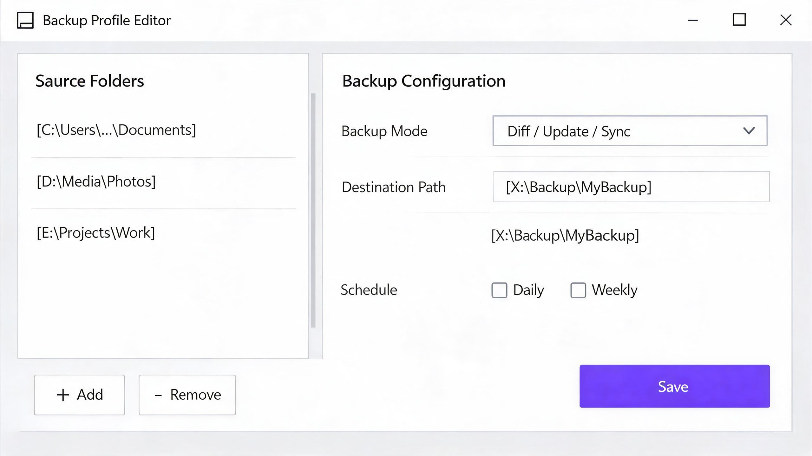

不是又一个臃肿的备份套件——专注做好一件事：让文件备份高效、省心。
底层驱动 FastCopy 引擎，异步 I/O 与并行读写，复制效率远超传统手动操作。
卡片式管理所有备份任务，一个方案支持多个源路径，多任务一目了然。
利用 Windows 任务计划程序，不常驻后台、不占内存，到点自动备份。
单文件 exe，配置全在同目录，U 盘一插就能跑，零迁移成本。
为定期把文件备份到移动硬盘 / NAS / 另一分区的场景量身打造。
diff / update / sync / move 等模式，覆盖增量、镜像、移动等常见需求。
每天 / 每周 / 每月 / 登录后触发，系统任务计划级可靠，无需管理员权限。
一键导出脚本，可交给任何调度器触发，不依赖本软件运行。
U 盘未插入、网络盘断开时自动跳过并通知，不报错、不误备份。
中 / 英 / 日 / 韩 / 法，界面与通知全面本地化。
每次备份自动记录结果与耗时，独立日志输出到目标目录。
简洁直观的操作界面，新手也能快速上手。


各有所长，按需选择。我们聚焦高速复制 + 方案管理 + 便携。
| 功能 | FastCopyManager | FreeFileSync | SyncBackFree | FastCopy |
|---|---|---|---|---|
| 复制引擎 | FastCopy | 自研 | 自研 | FastCopy |
| 多方案卡片管理 | ✓ | 配置文件 | Profile | ✗ |
| 多源 → 单目标 | ✓ | ✗ | ✗ | ✗ |
| 定时备份（不常驻） | ✓ | 需配合 | ✓ | ✗ |
| 导出独立脚本 | ✓ | ✗ | ✗ | ✗ |
| 单文件便携 | ✓ | ✗ | ✗ | ✓ |
| 目标盘缺失处理 | 跳过+通知 | 报错 | 有限 | 报错 |
| 多语言 | 5 种 | 多语言 | 英文为主 | 日/英 |
| 跨平台 | 仅 Windows | Win/Mac/Linux | 仅 Windows | 仅 Windows |
| 价格 | 免费开源 | 免费开源 | 免费（受限） | 免费（有 Pro） |
需要跨平台或文件版本管理可选 FreeFileSync；需要 Windows 上高效复制 + 轻量体积 + 直观方案管理，选我们。
有以下场景，FastCopyManager 就是为你做的。
每天自动把工作文件备份到移动硬盘或 NAS，插上就能用。
多个项目分别建方案，定期同步到备份盘，只传新增文件。
手里有多个备份任务，不想在配置文件之间来回翻找。
讨厌臃肿安装包和常驻进程，只要一个 exe 随身带走。
先看看这里有没有你的疑问。